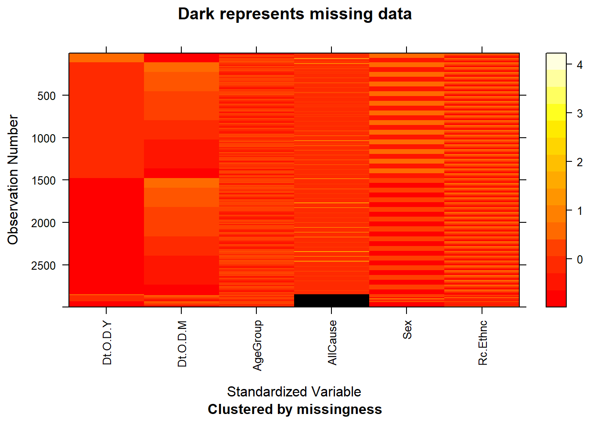
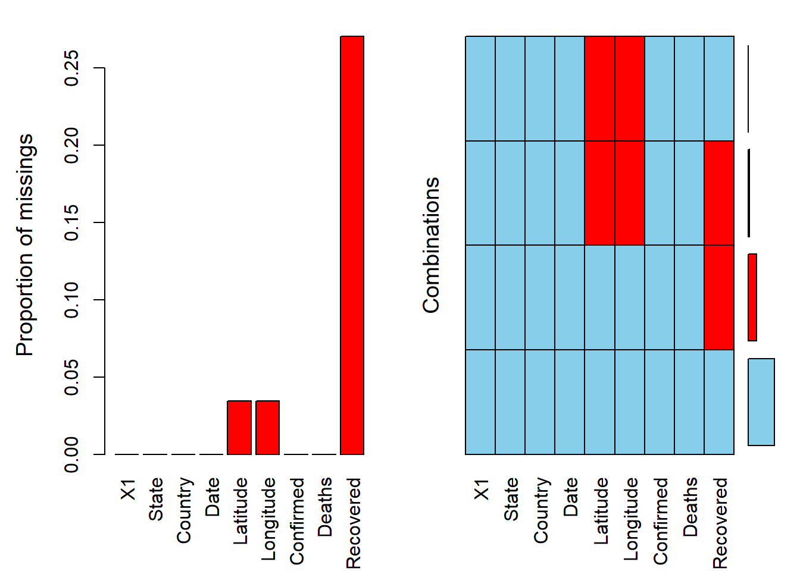

Chapter 4 Missing values
4.1 Belief 1 and 2
Total number of missing data by columns
## AllCause Date.Of.Death.Year Date.Of.Death.Month AgeGroup
## 151 0 0 0
## Sex Race.Ethnicity
## 0 0Total number of rows:
## [1] 3000
There are 151 missing data in 3000 rows, around 5 percent missing rates. All missing values come from “AllCause”(death counts) column. To deal with these missing values, we divide all the data that do not have missing values into groups by their sex, race and age group and then calculate mean within each group. Eventually, we update all missing values to the mean of their respective group.
## [1] FALSEAfter updates, there is no more missing values.
4.2 Belief 3
We discovered the missing data pattern as below.

The graph shows that the following patterns:
Recovered variable is the one with the highest missing data volume over 25%. It is very hard for us to estimate the true value for missing recovered number and the missing volume is over 1/4 of total so we decided not to use this variable.
Latitude and Longtitude have the same amount of missing data volumn less than 5%. After further inspectations, we found that data containing missing latitude and longtitude is from state ‘Diamond Princess’, ‘Grand Princess’ and ‘Recovered’. The reason behind that would be they cannot obtain exact latitude and longtitude for these three states. Moreover, these three states are not in the 50 official US states, so we decided to delete data in our dataset with these states.